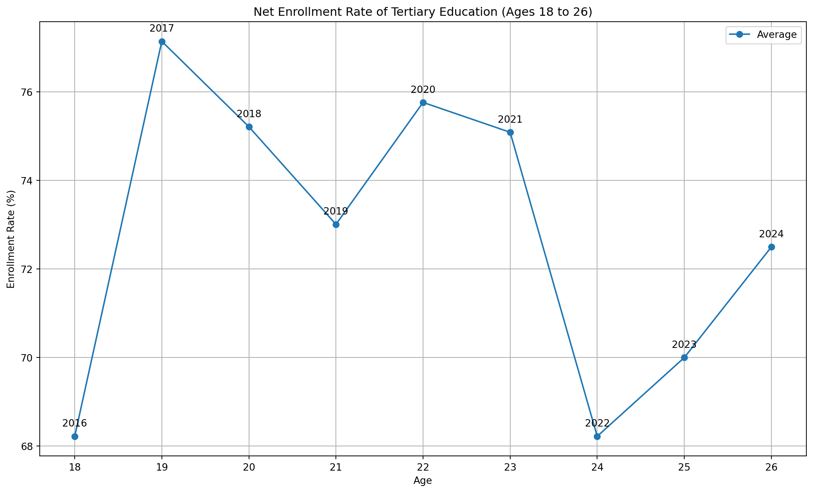
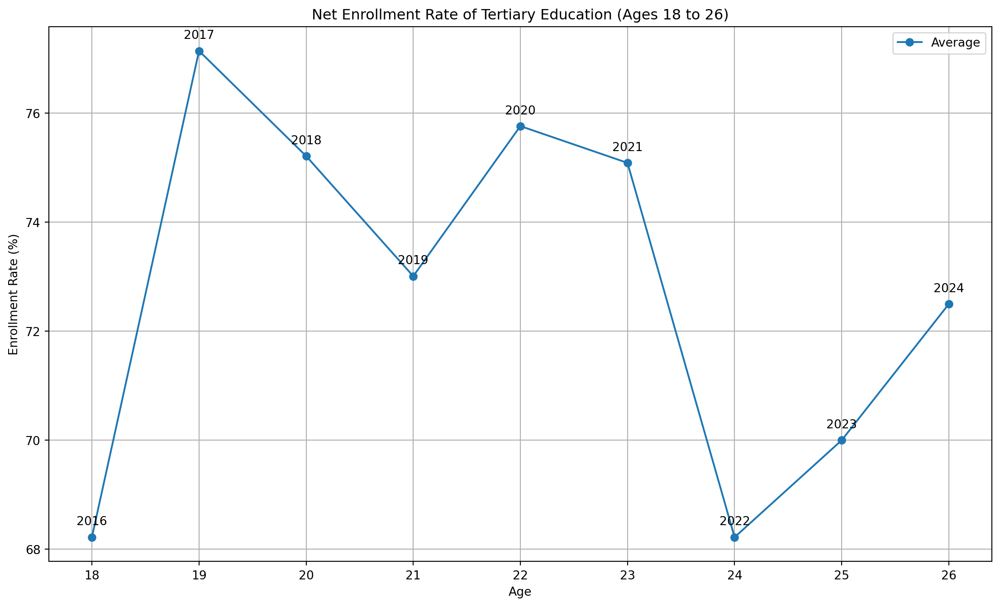
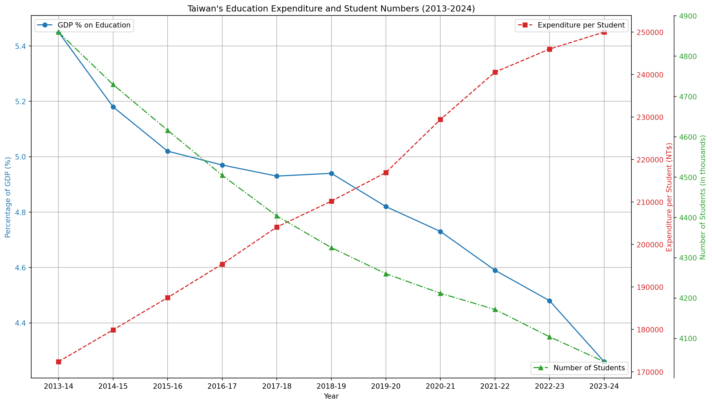
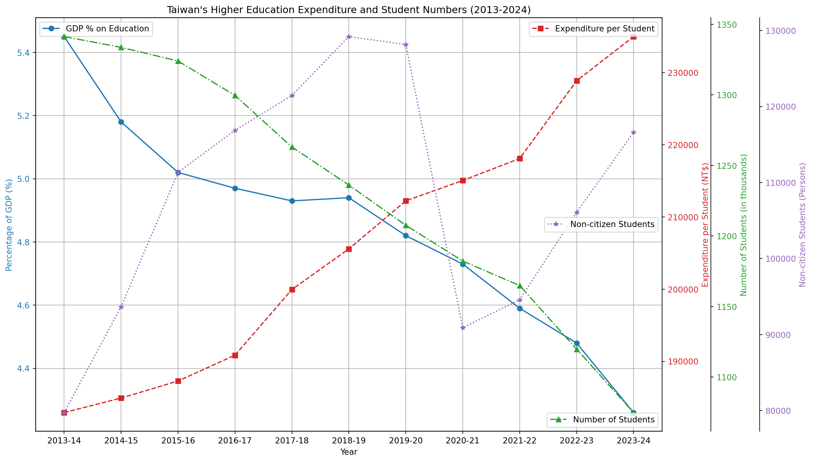
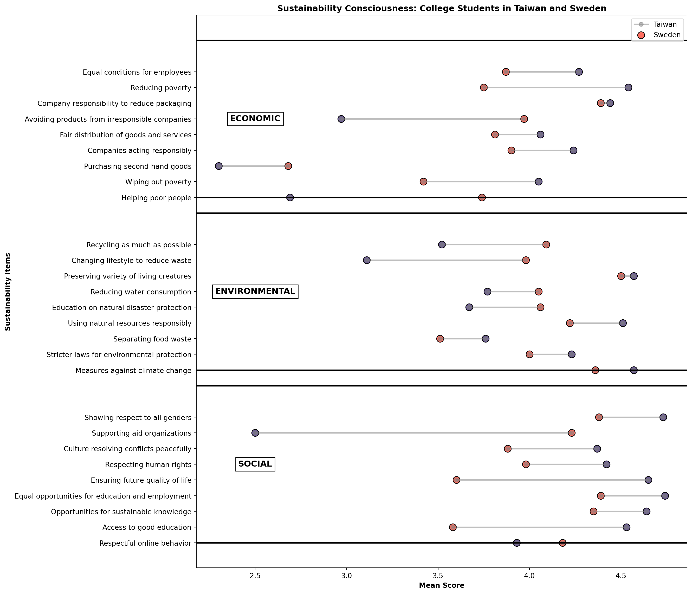
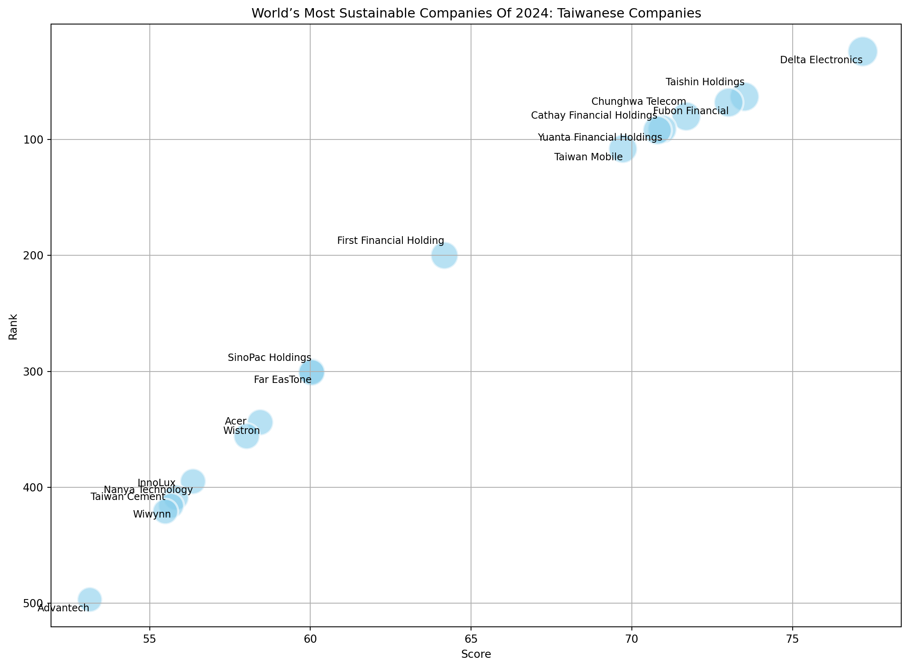
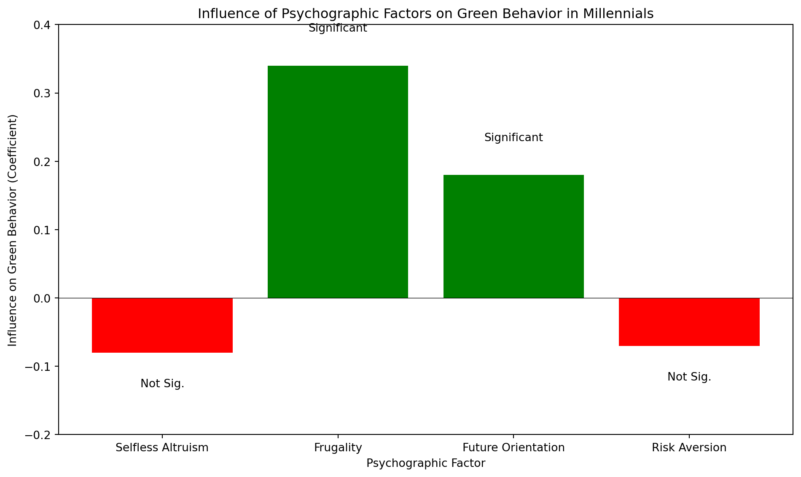

genz_students_chart()
In August 2018, Swedish high-school student Greta Thunberg skipped class to start a climate strike in front of the Swedish parliament Riksdag. Millions of people around the world joined her Fridays for Future protests. Time magazine named Thunberg person of the year for creating a global attitudinal shift. (Deutsche Welle, 2019).
The protest trend is subsiding.
McKinsey says people want eco-products but aren’t willing to pay more.
Willingness too pay research.
Taiwan has approximately 2 million young adults (Gen-Z, 18-26), and 73% percent of them are students attending tertiary education (Ministry of Education of Taiwan, 2024b).
genz_students_chart()
As of 2024, Taiwan has a total of 148 universities, colleges, and junior colleges (Ministry of Education of Taiwan, 2024c). Education funding is 4.26% of Taiwan’s GDP in 2023-24 and has been on a decline for a decade (Ministry of Education of Taiwan, 2024a). Taiwan has an aging population and declining birth rates have forced several schools to close down (Goh et al., 2023; Davidson & Chi-hui, 2024).
college_decline_chart()
While the overall number of students is declining, the share of international students is increasing.
higher_education_chart()
Taiwanese culture is deeply influenced by Confucianism, valuing academic excellence, effort, and the role of education in achieving social status (Xu, 2024). Both Confucianism and Daoism affect education to be teacher-centered, where traditionally the role of students is to listen and absorb knowledge; in today’s society, there’s space to open opportunities for revisiting dialogue-based education, where students would be encouraged to take a more active role and gain ownership of their education (Chang, Wegerif & Hennessy, 2023).
In general, Taiwanese teachers at all levels of education have a positive attitude towards sustainability.
At the pre-university level, Taiwanese government has been promoting environmental education through a green school network; however surveys at middle school and high school level suggest there is no impact on sustainability consciousness among students in comparison with regular schools (Olsson et al., 2019). Rather, Taiwanese students are influenced towards environmental action by group consciousness (Yu, Yu & Chao, 2017). In contrast,(陳珮英, 2003) reports good knowledge of sustainable development topics among junior high school students in Da-an District, Taipei City (n=596). (林, 2009) similarly reports a positive attitude and good knowledge of environmental sustainable development among senior high school students towards in Taipei City (n=328). Several Taiwanese studies also focus on the physical environment of school campuses, for example the sustainability of elementary school campuses (潘智謙 & Chih-Chien, 2006). Elementary-school teachers in Taichung (n=536), have positive attitudes towards environmental education are positive, proactive and demonstrate high awareness; they have participated in many sustainability-related workshops (Liao et al., 2022).
At the university level, (Chen & Tsai, 2016) reports a positive attitude yet moderate knowledge about ocean sustainability among Taiwanese college students (n=825). (Liu et al., 2023) studied sustainability behavior of Taiwanese University students, reporting the COVID-19 pandemic, in addition to prevalence of health issues, also spurred more attention on environmental topics. In a similar vein, the devastating nuclear disaster in Fukushima, Japan, after 2011 earthquake, had an effect on Taiwanese energy and sustainability education (姚 & 侯, 2011). Taiwanese government launched the Sustainable Council in 1997 to promote of environmental and sustainable development; a survey of university-level teachers (n=100) in central Taiwan (Taichung, Changhua, and Yunlin) shows a positive attitude toward environmental sustainability among teachers however implementation of environmental sustainability practices is from low to medium range (林 & 莊, 2015). Taiwanese government has also launched funding for University Social Responsibility (USR) programs to train college students in social innovation and local revitalization (Chen & Chou, 2023; Liu et al., 2022).
Comparing college students’ education for sustainable development (ESD) in Taiwan (n=617) and Sweden (n=583) found Sweden has a long history in environmental education while in Taiwan environment became a focus area with the 1998 educational reform (Berglund et al., 2020).
compare_taiwan_sweden()
An older study in 5 university in Taipei and Taichung (n=255) found 78.04% of respondents consumed beef in the month prior and were concerned with food safety, freshness, and quality (Hsu, Lu & Chen, 2014). (Thiagarajah & Kay, 2017) reports a general observation in their abstract (I was unable to access the full study) that most college students in all observed countries including Taiwan (n=534) regarded “plant-based diets to have health benefits”.
Taiwan has been affected by drought over 4 decades, rising temperatures and altered rainfall patterns, impacting water security and semiconductor manufacturing(Vo & Liou, 2024). Corals surrounding Taiwan are affected by marine heatwaves, ocean acidification and increased sea surface temperature affects coral bleaching level (Hsu et al., 2024). Biomarkers in the sediment core around Taiwan are being used to study variations in climate over past thousands of years (Wang et al., 2021). Taiwan is affected by Kuroshio (黑潮) like Estonia is affected by the Gulf Stream. Both oceanic currents help regulate the climates of their respective regions and marine ecosystems. Kuroshio is a warm current of the Pacific Ocean. Rossby planetary waves driven by the Earth’s rotation are crucial to keeping the atmosphere in balance by helping transfer tropical heat towards Earth’s poles and cold air toward the tropics; interactions between oceanic currents, Rossby waves and nonlinear mesoscale eddies, which form complex undulations, and their effect on the climate are still not well understood (US Department of Commerce, n.d.; Belonenko, Sandalyuk & Gnevyshev, 2023; Liu et al., 2024; Lin et al., 2022; Yin, Lin & Hou, 2019; Mensah et al., 2014; Shen et al., 2014). Around 33% of Taiwanese CO2e emissions is captured by the marine carbon sink, while the effect of forests in Taiwan needs further study (Hung et al., 2024).
Musical garbage truck are a success story of the environmental progress in Taiwan (Helen Davidson & Chi Hui Lin, 2022). Indeed, they are a user interface innovation and the main way how people in Taiwan interact with sustainability issues.
The popular narrative about Taiwan recounts the story of the economic and environmental transformation of the country. In the late 1980s during the heights of an economic boom Taiwan became famous as the Taiwanese Miracle (臺灣奇蹟) (Gold, 1986; Tsai, 1999). By the early 1990s another less flattering nickname appeared: “garbage island”, for the piles of trash covering the streets and overflowing landfills (Rapid Transitions Alliance, 2019; Ngo, 2020). In the two decades that followed, from 1998 to 2018, Taiwan made progress in municipal waste management, rising to the status of a world-leader in recycling (2nd effective recycling rate after Germany); in addition to an effective recycling system, the average waste amount generated per person by 700g (from 1140g to 400g) per day; nonetheless, industrial recycling rates were less stellar, standing at 80% in 2020 and there were unrealized opportunities in using industry 4.0 technologies, such as internet of things (IoT) sensors for better waste tracking (Wu, Hu & Ni, 2021; Bui et al., 2023).
Progress in sustainability is possible but achieving results takes time and innovation. (Rapid Transitions Alliance, 2019) credits the Taiwanese Homemakers United Foundation (財團法人主婦聯盟環境保護基金會) for initiating the transformation in 1987, suggesting a small group of people can have an outsized impact on the whole country. Their activity didn’t stop there and (財團法人主婦聯盟環境保護基金會, 2020) recounts a timeline of their achievements on their website until the present day.
Between 1970 and 2019 CO2 was a prerequisite of economic growth in Taiwan (check this again) (Chang et al., 2023). Taiwan is a net CO2 exporter since 1990s through emissions embedded in the industrial production oriented economy (Huang, Lv & Li, 2020).
TIME Magazine and Statista collaborative “World’s Most Sustainable Companies Of 2024” includes 17 Taiwanese companies (Alana Semuels, 2024).
| Rank | Company | Score |
|---|---|---|
| 24 | Delta Electronics | 77.18 |
| 63 | Taishin Holdings | 73.50 |
| 68 | Fubon Financial | 73.01 |
| 80 | Chunghwa Telecom | 71.69 |
| 91 | Yuanta Financial Holdings | 70.94 |
| 92 | Cathay Financial Holdings | 70.79 |
| 108 | Taiwan Mobile | 69.72 |
| 200 | First Financial Holding | 64.17 |
| 300 | Far EasTone | 60.04 |
| 301 | SinoPac Holdings | 60.04 |
| 344 | Wistron | 58.44 |
| 356 | Acer | 58.02 |
| 395 | Nanya Technology | 56.35 |
| 409 | InnoLux | 55.82 |
| 416 | Wiwynn | 55.67 |
| 421 | Taiwan Cement | 55.49 |
| 497 | Advantech | 53.14 |
Meanwhile, Corporate Knights which has been ranking global sustainable companies since 2005, including analysis of 7000 public companies with a revenue over US$1 billion, only includes TSMC in the top 100 (placed 20th in 2021 and 44th in 2022, dropping out in 2023) and Taiwan High Speed Rail Corp and Giant Manufacturing Co Ltd since 2023. (Corporate Knights, 2024)
taiwanese_company_ranking_chart<function charts.college.taiwanese_company_ranking_chart()>company_rank_chart()
In Japan, Gen-Z wants privacy and 75% feel others overshare on social media and 49 percent were concerned about their personal data https://www.mckinsey.com/~/media/mckinsey/email/genz/2022/06/07/2022-06-07b.html
(Manchanda et al., 2023) survey (n=726) administered at shopping malls in New Delhi, India, found similar levels of sustainability consciousness between Millenial (n=206) and Generation-Z (n=360) age groups; people with high level of materialism were found to be less sustainability-conscious; the effect of mindfulness on sustainability was found to be stronger among females than males, supporting the hypothesis of the moderating effect of gender.
There’s evidence young people have money. In the United States, the combined annual consumer spending of Gen-Z and Millennials was over 2.5 Trillion USD in 2020 (YPulse, 2020). Over the decade from 2020 to 2030, in the U.S., UK, and Australia, Millennials are projected to inherit 30 trillion USD from their parents (Calastone, 2020). There’s also some evidence of investment interest, however there’s large geographic variance. According to a (Calastone, 2020) study (n=3000) surveying people in the millennial age group between ages 23 and 35 in Europe (UK, France, Germany), U.S.A., Hong Kong, and Australia, 48% of respondents located in Hong Kong owned financial securities (such as stocks) while the figure was just 10% in France.
| Place of Comparison | Financial Security Ownership |
|---|---|
| Hong Kong | 48% |
| France | 10% |
There is extensive research on the attitudes of U.S. college students towards climate change. (American Press Institute, 2022) reports only 37% percent of U.S. Generation-Z and Millenials follow news related to environmental issues. (Schwartz et al., 2022) reports some adult US students in a small study (18-35, n = 284) express feelings of insignificance of their actions to achieve any meaningful impact. (Thomaes et al., 2023) reports U.S. adolescents don’t find sustainability relevant to their daily life. (Ross et al., 2016) says most people in the U.S. don’t act on climate change. “Action on climate change has been compromised by uncertainty, aspects of human psychology”.
In Portugal, Estonia, and elsewhere young people are suing companies for eco-problems: Flor (2024)
The En-ROADS climate change solutions simulator allows governments, organizations and individuals explore climate scenarios based on interactive changes in a visualization tool (Czaika & Selin, 2017; Creutzig & Kapmeier, 2020; Climate Interactive, 2023, n.d.).
“Research shows that showing people research doesn’t work,” John Sterman
Taiwanese college students are subjected to high levels of pollution. University campuses are somewhat healthier than other areas. There are several decades of research on pollution levels in Taiwan, most with very scary correlations to health.
Religion plays a role in air pollution: Tang & Pan (2014)
User research makes extensive use of user personas to represent a group of people with similar attributes. Designers use personas to articulate assumptions, which, if used well, is useful for user-centered design, to create better products. Personas help to reflect on what kind of biases might exist in the design. Within the larger cohort of college students several different personas could be defined, for example grouping people by interests, knowledge, habits, levels of anxiety, and other attributes.
There have been concerns about food safety in Taiwan.
Humans have a long list of cognitive biases, which a good design should take into account.
Students ride bicycles and scooters. Many circular economy service such as YouBike and transport sharing platforms like Uber are available.
Many students live in dorms and shared housing, meaning their impact per square meter is low.
Students in the Generation-Z age bracket (abbreviated as Gen-Z or Zoomers) are born between 1997 and 2012 (Branka Vuleta, 2023). Over 98% of Gen-Z owns a smartphone while only 80% of the general world population does (Global Web Index, 2017; BankMyCell, 2022).
High levels of technology adoption worldwide
(Credit Suisse, 2022) suggests young consumers are more eco-friendly and drive the speed of change. Yet the Economist has ran a few anonymous articles calling gen-z green ideals into question (The Economist, 2023; Anon, 2023).
Deyan Georgiev (2023)
Alex Reice (2021)
(Wood, 2022) suggests in the U.S. Gen-Z is willing to pay 10% more for ethically goods, spend 24% more on sustainable products than Generation X and 75% of Gen Z would prioritize sustainability over brand loyalty.
The above studies give foundation for creating a persona of a U.S. College Student who doesn’t follow environmental news and thinks climate action doesn’t make a difference. This doesn’t necessarily mean this group of people with similar ideas would deny climate change is happening. Rather “Climate Denier” could be another persona, grouping people into a cohort who thinks climate change is not real. Further research would be needed to define relevant personas which have meaningful predictive and generalizing power.
| Description | Name | Beliefs |
|---|---|---|
| Climate Change Denier | Jake | Climate change doesn’t exist. |
| Alice | ||
| Sam |
Rooney-Varga et al. (2019) shows the effectiveness of The Climate Action Simulation in educating users about success scenarios.
A large worldwide study (n=10000, age 16-25) by (Hickman et al., 2021) provides evidence the youth is anxious about climate in Australia, Brazil, Finland, France, India, Nigeria, Philippines, Portugal, the UK, and the USA. Similarly, (Thompson, 2021) finds young people around the world have climate anxiety. (Whitmarsh et al., 2022) shows worry about the climate in the UK is generally widespread (over 40% of the respondents, n=1332), while climate anxiety is highest among young people and is a possible motivator for climate action. Additionally, (Ogunbode et al., 2022) finds climate anxiety in 32 countries and also supports the idea that climate anxiety leads to climate activism. (Thibodeau, 2022): “In 2021, the BBC polled 1,000 people in Scotland to understand the barriers to taking climate action. What they found was even though many people were aware of actions needed to take to address climate change, and had intentions to their behaviors didn’t change. This is a phenomenon called the intention-action gap.”
(Osaka, 2023) argues doomerism is an excuse for climate in-action. Hope is necessary for people to make changes in their habits (Marlon et al., 2019).
Designing for Health and Sustainability: Health and sustainability are intrinsically connected. (Kjaergard, Land & Bransholm Pedersen, 2014) shows how “understanding health and sustainability as a duality, health both creates conditions and is conditioned by sustainability, understood as economic, social and environmental sustainability, while on the other hand sustainability creates and is conditioned by human health”
Design for Human Rights (UNFCCC, 2023)] text refers to “human right to a clean, healthy and sustainable environment”.
Refi podcast: “people need agency”.
Martiskainen et al. (2020) (need access, ncku doesn’t subscribe)
Seabrook (2020) (need access)
Older research on young adults (Millenials at the time) highlights how Millenials “use Google as a reference point for ease of use and simplicity” (Kate Moran, 2016).
Psychological factors influencing millenials to engage with sustainability (Naderi & Van Steenburg, 2018)
green_millenials()
Humans working together are able to achieve more than single individuals. “Any community on the internet should be able to come together, with capital, and work towards any shared vision. That starts with empowering creators and artists to create and own the culture they’re creating. In the long term this moves to internet communities taking on societal endeavors.”
The focus on group consciousness suggests community-based sustainability action may be effective.
Zero Waste Lifestyle is the opposite of overconsumption. Zero waste suggests people buy in bulk to save. Buying in bulk for more savings and to reduce packaging. Through group purchases and community investing while also reducing consumption. - Zero waste municipality in Treviso
Minimalism is a movement of people living a simple life. This is always going to be a small percentage of people. (Costa, 2018): Finnish socialists: minimalism. Tokyo (Tokyo Simple Eco Life, 2021). - consumers choose to engage in becoming minimalist in a non-linear process with overlapping stages (Oliveira De Mendonça, Coelho Rocha & Bogéa Da Costa Tayt-son, 2021).
What are the building blocks of a thriving community?
Luxury - Conversely, Taiwan is a growing market for luxury brands (Karatzas, Kapoulas & Priporas, 2019).
2024 “underconsumption” and “deinfluencing” are trends on TikTok Fares, Lee & Lee (2024)
Coined by Richard Dawkins in 1976 in the context of biology.
Internet memes and meme stocks
Memes from daily life, business to war, are relevant to penetrating through the noise of the web.
Memes and sustainability?
Meme research has become an academic discipline
Memes have become a popular communication tool..
Zidani (2021)
Zidani & Miltner (2022)
Irina Lyan, Limor Shifman & Sulafa Zidani (2015)
Zannettou et al. (2018)
Peters-Lazaro, Shresthova & Jenkins (2020)
College Students Need Tools for Action
Environment shapes action.. create an environment where college students can influence companies.
| Category | Implication |
|---|---|
| Community | Taiwanese students are influenced by the actions of their peers; the app should show what other people are doing. |
| People exist in relation to other people. | |
| Psychology of ‘fundraising clubs’ vs individual investing | |
| Anon (n.d.) Ukraine DAO to support Ukraine through web3. | |
| These social movements are small and require too much effort to be feasible for the app? Most college students are not zero waste or minimalist. | |
| Group Purchases. | |
| Find Your Composting Community. | |
| Provides a community for pooling money with like-minded investors. | |
| Climate Anxiety | How to support the youth? Design to reduce climate anxiety? Is getting people to go to nature more a good way to increase ecological awareness? Empowered by Design. Youth empowerment: The design should empower young people. |
| Consumer branded carbon credits like angry teenagers? | |
| Invest time not money, student don’t have money? | |
| Social Trust | Show Success Scenarios! |
| Ask how much time you want to contribute. | |
| Match with other people based on time. | |
| Create a group chatroom. | |
| Use AI to help out with tips. | |
| Ask university students what do they study and match with that industry to become expert and sustainability leader in this field. | |
| People want to help and make a difference. Give people things to do. The Don’t Look Up (n.d.) part of the Don’t Look Up movie’s social campaign provides 5 user models / roles for the audience to follow: Consumer, Investor, Activist. | |
| Choose Your Climate Solutions. | |
| Younger people show higher motivation (participants in climate protests). How to be relevant for a younger audience? | |
| Yet action remains low. | |
| Targeted and gated to college students. | |
| FB, etc, Gas all had the same launch strategy - start with students | |
| Kuzminski (2015) ecology of money | |
| Young people are mobile-first | |
| Persona: I care mostly about… fashion, art, … | |
| Young people like to follow trends. | |
| Food ordering apps are popular. | |
| Monoculture to regenerative food forests Oil to electric cars / bicycles. | |
| Social Educational Edutainment Fun | |
| aespa (2020): Karina from Korea. It makes sense your sustainability assistant would talk to you. Studies show gen N is speaking to computers all the time. Interacting with the user is on the rise. For example, Chime makes tipping suggestions on the place of purchase. | |
| The demographics that stand to win the most from the green transformation of business are the youngest generations, with more years of life ahead of them, and more exposure to future environmental and social risks. It would be advisable for Generation Z and their parents (Millennials) to invest their resources in greener assets, however, it’s still difficult to pick and choose between ‘good’ and ‘bad’ financial vehicles to invest in. | |
| This creates an opportunity for a new generation of sustainable investment apps, focusing on the usability and accessibility of ESG for a mainstream audience. Generation Z and Millennials expect a consumer-grade user experience. | |
| What would that experience look like? I’ve chosen these demographics with the assumption that if given the right tools, the emotional demand for sustainability could be transformed into action. The exploration of systems of feedback to enable consumers to apply more direct positive and negative pressure to the businesses and consumers signal consequences for undesirable ecological performance is a major motivation of this study. |
| The current environmental upheaval, led by Gen-Z and Millennials, and the business adaptation (or lack thereof) to sustainable economic models, taking into account the hidden social and environmental costs we didn’t calculate in our pricing before. | |
|
Social Trust